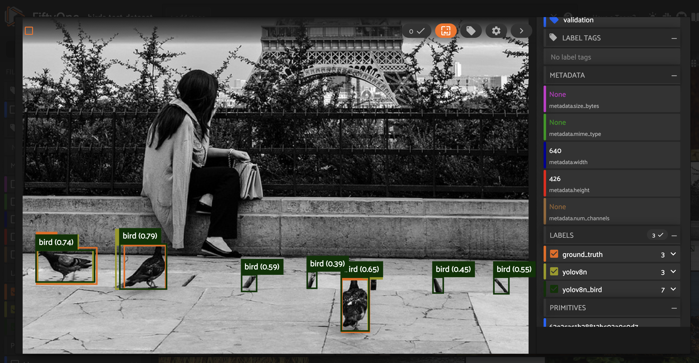

Fine-tune YOLOv8 models for custom use cases with the help of FiftyOne 妦
Since its initial release back in 2015, the You Only Look Once (YOLO) family of computer vision models has been one of the most popular in the field. In late 2022, Ultralytics announced YOLOv8, which comes with a new backbone.
The basic YOLOv8 detection and segmentation models, however, are general purpose, which means for custom use cases they may not be suitable out of the box. With FiftyOne, we can visualize and evaluate YOLOv8 model predictions, and better understand where the model’s predictive power breaks down.
In this walkthrough, we will show you how to load YOLOv8 model predictions into FiftyOne, and use insights from model evaluation to fine-tune a YOLOv8 model for your custom use case.
Specifically, this walkthrough covers:
-
Loading YOLOv8 model predictions into FiftyOne
-
Evaluating YOLOv8 model predictions
-
Curating a dataset for fine-tuning
-
Fine-tuning YOLOv8 models
-
Comparing the performance of out-of-the-box and fine-tuned YOLOv8 models.
So, what’s the takeaway?
FiftyOne can help you to achieve better performance using YOLOv8 models on real-time inference tasks for custom use cases.
Setup 妦
To get started, you need to install FiftyOne and Ultralytics:
[ ]:
!pip install fiftyone ultralytics
[ ]:
import fiftyone as fo
import fiftyone.zoo as foz
from fiftyone import ViewField as F
[ ]:
import numpy as np
import os
from tqdm import tqdm
We will import the YOLO object from Ultralytics and use this to instantiate pretrained detection and segmentation models in Python. Along with the YOLOv8 architecture, Ultralytics released a set of pretrained models, with different sizes, for classification, detection, and segmentation tasks.
For the purposes of illustration, we will use the smallest version, YOLOv8 Nano (YOLOv8n), but the same syntax will work for any of the pretrained models on the Ultralytics YOLOv8 GitHub repo.
[ ]:
from ultralytics import YOLO
detection_model = YOLO("yolov8n.pt")
seg_model = YOLO("yolov8n-seg.pt")
In Python, we can apply a YOLOv8 model to an individual image by passing the file path into the model call. For an image with file path path/to/image.jpg, running detection_model("path/to/image.jpg") will generate a list containing a single ultralytics.yolo.engine.results.Results object.
We can see this by applying the detection model to Ultralytics’ test image:
[ ]:
results = detection_model("https://ultralytics.com/images/bus.jpg")
A similar result can be obtained if we apply the segmentation model to an image. These results contain bounding boxes, class confidence scores, and integers representing class labels. For a complete discussion of these results objects, see the Ultralytics YOLOv8 Results API Reference.
If we want to run tasks on all images in a directory, then we can do so from the command line with the YOLO Command Line Interface by specifying the task [detect, segment, classify] and mode [train, val, predict, export], along with other arguments.
To run inference on a set of images, we must first put the data in the appropriate format. The best way to do so is to load your images into a FiftyOne Dataset, and then export the dataset in YOLOv5Dataset format, as YOLOv5 and YOLOv8 use the same data formats.
💡 FiftyOne’s Ultralytics Integration
If you just want to run inference on your FiftyOne dataset with an existing YOLOv8 model, you can do so by passing this ultralytics.YOLO model directly into your FiftyOne dataset’s apply_model() method:
import fiftyone as fo
import fiftyone.zoo as foz
# Load a dataset
dataset = foz.load_zoo_dataset("quickstart")
# Load a YOLOv8 model
from ultralytics import YOLO
model = YOLO("yolov8l.pt")
# Apply the model to the dataset
dataset.apply_model(model, label_field="yolov8l")
# Launch the App to visualize the results
session = fo.launch_app(dataset)
For more details, check out the FiftyOne Ultralytics Integration docs!
Load YOLOv8 predictions in FiftyOne 妦
In this walkthrough, we will look at YOLOv8’s predictions on a subset of the MS COCO dataset. This is the dataset on which these models were trained, which means that they are likely to show close to peak performance on this data. Additionally, working with COCO data makes it easy for us to map model outputs to class labels.
Load the images and ground truth object detections in COCO’s validation set from the FiftyOne Dataset Zoo.
[ ]:
dataset = foz.load_zoo_dataset(
'coco-2017',
split='validation',
)
We then generate a mapping from YOLO class predictions to COCO class labels. COCO has 91 classes, and YOLOv8, just like YOLOv3 and YOLOv5, ignores all of the numeric classes and focuses on the remaining 80.
[ ]:
coco_classes = [c for c in dataset.default_classes if not c.isnumeric()]
Generate predictions 妦
Export the dataset into a directory coco_val in YOLO format:
[3]:
def export_yolo_data(
samples,
export_dir,
classes,
label_field = "ground_truth",
split = None
):
if type(split) == list:
splits = split
for split in splits:
export_yolo_data(
samples,
export_dir,
classes,
label_field,
split
)
else:
if split is None:
split_view = samples
split = "val"
else:
split_view = samples.match_tags(split)
split_view.export(
export_dir=export_dir,
dataset_type=fo.types.YOLOv5Dataset,
label_field=label_field,
classes=classes,
split=split
)
[ ]:
coco_val_dir = "coco_val"
export_yolo_data(dataset, coco_val_dir, coco_classes)
Then run inference on these images:
[ ]:
!yolo task=detect mode=predict model=yolov8n.pt source=coco_val/images/val save_txt=True save_conf=True
Running this inference generates a directory runs/detect/predict/labels, which will contain a separate .txt file for each image in the dataset, and a line for each object detection.
Each line is in the form: an integer for the class label, a class confidence score, and four values representing the bounding box.
[22]:
label_file = "runs/detect/predict/labels/000000000139.txt"
with open(label_file) as f:
print(f.read())
56 0.663281 0.619718 0.0640625 0.201878 0.265856
60 0.55625 0.619718 0.184375 0.225352 0.266771
74 0.710938 0.307512 0.01875 0.0469484 0.277868
60 0.860156 0.91784 0.279687 0.159624 0.278297
72 0.744531 0.539906 0.101562 0.295775 0.356417
75 0.888281 0.820423 0.0609375 0.241784 0.391675
58 0.385156 0.457746 0.0640625 0.084507 0.420693
56 0.609375 0.620892 0.090625 0.21831 0.50562
56 0.650781 0.619718 0.0859375 0.215962 0.508265
56 0.629687 0.619718 0.128125 0.220657 0.523211
0 0.686719 0.535211 0.0828125 0.333333 0.712339
56 0.505469 0.624413 0.0953125 0.230047 0.854189
62 0.125 0.502347 0.23125 0.225352 0.927385
Load detections 妦
We can read a YOLOv8 detection prediction file with NN detections into an (N,6)(N,6) numpy array:
[23]:
def read_yolo_detections_file(filepath):
detections = []
if not os.path.exists(filepath):
return np.array([])
with open(filepath) as f:
lines = [line.rstrip('\n').split(' ') for line in f]
for line in lines:
detection = [float(l) for l in line]
detections.append(detection)
return np.array(detections)
From here, we need to convert these detections into FiftyOne’s Detections format.
YOLOv8 represents bounding boxes in a centered format with coordinates [center_x, center_y, width, height], whereas FiftyOne stores bounding boxes in [top-left-x, top-left-y, width, height] format. We can make this conversion by “un-centering†the predicted bounding boxes:
[24]:
def _uncenter_boxes(boxes):
'''convert from center coords to corner coords'''
boxes[:, 0] -= boxes[:, 2]/2.
boxes[:, 1] -= boxes[:, 3]/2.
Additionally, we can convert a list of class predictions (indices) to a list of class labels (strings) by passing in the class list:
[25]:
def _get_class_labels(predicted_classes, class_list):
labels = (predicted_classes).astype(int)
labels = [class_list[l] for l in labels]
return labels
Given the output of a read_yolo_detections_file() call, yolo_detections, we can generate the FiftyOne Detections object that captures this data:
[26]:
def convert_yolo_detections_to_fiftyone(
yolo_detections,
class_list
):
detections = []
if yolo_detections.size == 0:
return fo.Detections(detections=detections)
boxes = yolo_detections[:, 1:-1]
_uncenter_boxes(boxes)
confs = yolo_detections[:, -1]
labels = _get_class_labels(yolo_detections[:, 0], class_list)
for label, conf, box in zip(labels, confs, boxes):
detections.append(
fo.Detection(
label=label,
bounding_box=box.tolist(),
confidence=conf
)
)
return fo.Detections(detections=detections)
The final ingredient is a function that takes in the file path of an image, and returns the file path of the corresponding YOLOv8 detection prediction text file.
[ ]:
def get_prediction_filepath(filepath, run_number = 1):
run_num_string = ""
if run_number != 1:
run_num_string = str(run_number)
filename = filepath.split("/")[-1].split(".")[0]
return f"runs/detect/predict{run_num_string}/labels/{filename}.txt"
If you run multiple inference calls for the same task, the predictions results are stored in a directory with the next available integer appended to predict in the file path. You can account for this in the above function by passing in the run_number argument.
Putting the pieces together, we can write a function that adds these YOLOv8 detections to all of the samples in our dataset efficiently by batching the read and write operations to the underlying MongoDB database.
[31]:
def add_yolo_detections(
samples,
prediction_field,
prediction_filepath,
class_list
):
prediction_filepaths = samples.values(prediction_filepath)
yolo_detections = [read_yolo_detections_file(pf) for pf in prediction_filepaths]
detections = [convert_yolo_detections_to_fiftyone(yd, class_list) for yd in yolo_detections]
samples.set_values(prediction_field, detections)
Now we can rapidly add the detections in a few lines of code:
[ ]:
filepaths = dataset.values("filepath")
prediction_filepaths = [get_prediction_filepath(fp) for fp in filepaths]
dataset.set_values(
"yolov8n_det_filepath",
prediction_filepaths
)
add_yolo_detections(
dataset,
"yolov8n",
"yolov8n_det_filepath",
coco_classes
)
Now we can visualize these YOLOv8 model predictions on the samples in our dataset in the FiftyOne App:
[ ]:
session = fo.launch_app(dataset)

[ ]:
session.freeze()
Load segmentation masks 妦
It is also worth noting that it is possible to convert YOLOv8 predictions directly from the output of a YOLO model call in Python, without first generating external prediction files and reading them in. Let’s see how this can be done for instance segmentations.
Like detections, YOLOv8 stores instance segmentations with centered bounding boxes. In addition, YOLOv8 stores a mask that covers the entire image, with only a rectangular region of that mask containing nonzero values. FiftyOne, on the other hand, stores instance segmentations at Detection labels with a mask that only covers the given
bounding box.
We can convert from YOLOv8 instance segmentations to FiftyOne instance segmentations with this convert_yolo_segmentations_to_fiftyone() function:
[32]:
def convert_yolo_segmentations_to_fiftyone(
yolo_segmentations,
class_list
):
detections = []
boxes = yolo_segmentations.boxes.xywhn
if not boxes.shape or yolo_segmentations.masks is None:
return fo.Detections(detections=detections)
_uncenter_boxes(boxes)
masks = yolo_segmentations.masks.masks
labels = _get_class_labels(yolo_segmentations.boxes.cls, class_list)
for label, box, mask in zip(labels, boxes, masks):
## convert to absolute indices to index mask
w, h = mask.shape
tmp = np.copy(box)
tmp[2] += tmp[0]
tmp[3] += tmp[1]
tmp[0] *= h
tmp[2] *= h
tmp[1] *= w
tmp[3] *= w
tmp = [int(b) for b in tmp]
y0, x0, y1, x1 = tmp
sub_mask = mask[x0:x1, y0:y1]
detections.append(
fo.Detection(
label=label,
bounding_box = list(box),
mask = sub_mask.astype(bool)
)
)
return fo.Detections(detections=detections)
Looping through all samples in the dataset, we can add the predictions from our seg_model, and then view these predicted masks in the FiftyOne App.
[ ]:
session = fo.launch_app(dataset)

[ ]:
session.freeze()
Evaluate YOLOv8 model predictions 妦
Now that we have YOLOv8 predictions loaded onto the images in our dataset, we can evaluate the quality of these predictions using FiftyOne’s Evaluation API.
To evaluate the object detections in the yolov8_det field relative to the ground_truth detections field, we can run:
[ ]:
detection_results = dataset.evaluate_detections(
"yolov8n",
eval_key="eval",
compute_mAP=True,
gt_field="ground_truth",
)
Compute summary statistics 妦
We can then get the mean average precision (mAP) of the model’s predictions:
[44]:
mAP = detection_results.mAP()
print(f"mAP = {mAP}")
mAP = 0.3121319189417518
We can also look at the model’s performance on the 20 most common object classes in the dataset, where it has seen the most examples so the statistics are most meaningful:
[45]:
counts = dataset.count_values("ground_truth.detections.label")
top20_classes = sorted(
counts,
key=counts.get,
reverse=True
)[:20]
detection_results.print_report(classes=top20_classes)
precision recall f1-score support
person 0.85 0.68 0.76 11573
car 0.71 0.52 0.60 1971
chair 0.62 0.34 0.44 1806
book 0.61 0.12 0.20 1182
bottle 0.68 0.39 0.50 1051
cup 0.61 0.44 0.51 907
dining table 0.54 0.42 0.47 697
traffic light 0.66 0.36 0.46 638
bowl 0.63 0.49 0.55 636
handbag 0.48 0.12 0.19 540
bird 0.79 0.39 0.52 451
boat 0.58 0.29 0.39 430
truck 0.57 0.35 0.44 415
bench 0.58 0.27 0.37 413
umbrella 0.65 0.52 0.58 423
cow 0.81 0.61 0.70 397
banana 0.68 0.34 0.45 397
carrot 0.56 0.29 0.38 384
motorcycle 0.77 0.58 0.66 379
backpack 0.51 0.16 0.24 371
micro avg 0.76 0.52 0.61 25061
macro avg 0.64 0.38 0.47 25061
weighted avg 0.74 0.52 0.60 25061
From the output of print_report(), we can see that this model performs decently well, but certainly has its limitations. While its precision is relatively good on average, it is lacking when it comes to recall. This is especially pronounced for certain classes like the book class.
Inspect individual predictions 妦
Fortunately, we can dig deeper into these results with FiftyOne. Using the FiftyOne App, we can for instance filter by class for both ground truth and predicted detections so that only book detections appear in the samples.
[ ]:
session.freeze()
Scrolling through the samples in the sample grid, we can see that a lot of the time, COCO’s purported ground truth labels for the book class appear to be imperfect. Sometimes, individual books are bounded, other times rows or whole bookshelves are encompassed in a single box, and yet other times books are entirely unlabeled. Unless our desired computer vision application specifically requires good book detection, this should probably not be a point of concern when we are assessing the
quality of the model. After all, the quality of a model is limited by the quality of the data it is trained on - this is why data-centric approaches to computer vision are so important!
For other classes like the bird class, however, there appear to be challenges. One way to see this is to filter for bird ground truth detections and then convert to an EvaluationPatchesView. Some of these recall errors appear to be related to small features, where the resolution is poor.
In other cases though, quick inspection confirms that the object is clearly a bird. This means that there is likely room for improvement.
[ ]:
session.freeze()
Curate data for fine-tuning 妦
For the remainder of this walkthrough, we will pretend that we are working for a bird conservancy group, putting computer vision models in the field to track and protect endangered species. Our goal is to fine-tune a YOLOv8 detection model to detect birds.
Generate test set 妦
We will use the COCO validation dataset above as our test set. Since we are only concerned with detecting birds, we can filter out all non- bird ground truth detections using filter_labels(). We will also filter out the non- bird predictions, but will pass the only_matches = False argument into filter_labels() to make sure we keep images that have ground truth bird detections without YOLOv8n bird predictions.
[ ]:
test_dataset = dataset.filter_labels(
"ground_truth",
F("label") == "bird"
).filter_labels(
"yolov8n",
F("label") == "bird",
only_matches=False
).clone()
test_dataset.name = "birds-test-dataset"
test_dataset.persistent = True
## set classes to just include birds
classes = ["bird"]
We then give the dataset a name, make it persistent, and save it to the underlying database. This test set has only 125 images, which we can visualize in the FiftyOne App.
[ ]:
session = fo.launch_app(dataset)

[ ]:
session.freeze()
We can also run evaluate_detections() on this data to evaluate the YOLOv8n model’s performance on images with ground truth bird detections. We will store the results under the base evaluation key:
[49]:
base_bird_results = test_dataset.evaluate_detections(
"yolov8n",
eval_key="base",
compute_mAP=True,
)
Evaluating detections...
100% |█████████████████| 125/125 [886.0ms elapsed, 0s remaining, 141.1 samples/s]
Performing IoU sweep...
100% |█████████████████| 125/125 [619.1ms elapsed, 0s remaining, 201.9 samples/s]
[54]:
mAP = base_bird_results.mAP()
print(f"Base mAP = {mAP}")
Base mAP = 0.24897924786479841
[56]:
base_bird_results.print_report(classes=classes)
precision recall f1-score support
bird 0.87 0.39 0.54 451
micro avg 0.87 0.39 0.54 451
macro avg 0.87 0.39 0.54 451
weighted avg 0.87 0.39 0.54 451
We note that while the recall is the same as in the initial evaluation report over the entire COCO validation split, the precision is higher. This means there are images that have YOLOv8n bird predictions but not ground truth bird detections.
The final step in preparing this test set is exporting the data into YOLOv8 format so we can run inference on just these samples with our fine-tuned model when we are done training. We will do so using the export_yolo_data() function we defined earlier.
[ ]:
export_yolo_data(
test_dataset,
"birds_test",
classes
)
Generate training set 妦
Now we choose the data on which we will fine-tune the base YOLOv8 model. Our goal is to generate a high-quality training dataset whose examples cover all expected scenarios in that subset.
In general, this is both an art and a science, and it can involve a variety of techniques, including
-
pulling in data from other datasets
-
annotating more data that you’ve already collected with ground truth labels,
-
augmenting your data with tools like Albumentations
-
generating synthetic data with diffusion models or GANs.
We’ll take the first approach and incorporate existing high-quality data from Google’s Open Images dataset. For a thorough tutorial on how to work with Open Images data, see Loading Open Images V6 and custom datasets with FiftyOne.
The COCO training data on which YOLOv8 was trained contains 3,2373,237 images with bird detections. Open Images is more expansive, with the train, test, and validation splits together housing 20k+20k+ images with Bird detections.
Let’s create our training dataset. First, we’ll create a dataset, train_dataset, by loading the bird detection labels from the COCO train split using the FiftyOne Dataset Zoo, and cloning this into a new Dataset object:
[ ]:
train_dataset = foz.load_zoo_dataset(
'coco-2017',
split='train',
classes=classes
).clone()
train_dataset.name = "birds-train-data"
train_dataset.persistent = True
train_dataset.save()
Then, we’ll load Open Images samples with Bird detection labels, passing in only_matching=True to only load the Bird labels. We then map these labels into COCO label format by changing Bird into bird.
[ ]:
oi_samples = foz.load_zoo_dataset(
"open-images-v6",
classes = ["Bird"],
only_matching=True,
label_types="detections"
).map_labels(
"ground_truth",
{"Bird":"bird"}
)
We can add these new samples into our training dataset with merge_samples():
[ ]:
train_dataset.merge_samples(oi_samples)
This dataset contains 24,22624,226 samples with bird labels, or more than seven times as many birds as the base YOLOv8n model was trained on. In the next section, we’ll demonstrate how to fine-tune the model on this data using the YOLO Trainer class.
Fine-tune a YOLOv8 detection model 妦
The final step in preparing our data is splitting it into training and validation sets and exporting it into YOLO format. We will use an 80–20 train-val split, which we will select randomly using FiftyOne’s random utils.
[ ]:
import fiftyone.utils.random as four
## delete existing tags to start fresh
train_dataset.untag_samples(train_dataset.distinct("tags"))
## split into train and val
four.random_split(
train_dataset,
{"train": 0.8, "val": 0.2}
)
## export in YOLO format
export_yolo_data(
train_dataset,
"birds_train",
classes,
split = ["train", "val"]
)
Now all that is left is to do the fine-tuning! We will use YOLO command line syntax, with mode=train. We will specify the initial weights as the starting point for training, the number of epochs, image size, and batch size.
[ ]:
!yolo task=detect mode=train model=yolov8n.pt data=birds_train/dataset.yaml epochs=60 imgsz=640 batch=16
Image sizes 640 train, 640 val
Using 8 dataloader workers
Logging results to runs/detect/train
Starting training for 60 epochs...
Epoch GPU_mem box_loss cls_loss dfl_loss Instances Size
1/60 6.65G 1.392 1.627 1.345 22 640: 1
Class Images Instances Box(P R mAP50 m
all 4845 12487 0.677 0.524 0.581 0.339
Epoch GPU_mem box_loss cls_loss dfl_loss Instances Size
2/60 9.58G 1.446 1.407 1.395 30 640: 1
Class Images Instances Box(P R mAP50 m
all 4845 12487 0.669 0.47 0.54 0.316
Epoch GPU_mem box_loss cls_loss dfl_loss Instances Size
3/60 9.58G 1.54 1.493 1.462 29 640: 1
Class Images Instances Box(P R mAP50 m
all 4845 12487 0.529 0.329 0.349 0.188
......
Epoch GPU_mem box_loss cls_loss dfl_loss Instances Size
58/60 9.59G 1.263 0.9489 1.277 47 640: 1
Class Images Instances Box(P R mAP50 m
all 4845 12487 0.751 0.631 0.708 0.446
Epoch GPU_mem box_loss cls_loss dfl_loss Instances Size
59/60 9.59G 1.264 0.9476 1.277 29 640: 1
Class Images Instances Box(P R mAP50 m
all 4845 12487 0.752 0.631 0.708 0.446
Epoch GPU_mem box_loss cls_loss dfl_loss Instances Size
60/60 9.59G 1.257 0.9456 1.274 41 640: 1
Class Images Instances Box(P R mAP50 m
all 4845 12487 0.752 0.631 0.709 0.446
For this walkthrough, 6060 epochs of training was sufficient to achieve convergence. If you are fine-tuning on a different dataset, you may need to change these parameters.
With fine-tuning complete, we can generate predictions on our test data with the “best†weights found during the training process, which are stored at runs/detect/train/weights/best.pt:
[ ]:
!yolo task=detect mode=predict model=runs/detect/train/weights/best.pt source=birds_test/images/val save_txt=True save_conf=True
Then we can load these predictions onto our data and visualize the predictions in the FiftyOne App:
[ ]:
filepaths = test_dataset.values("filepath")
prediction_filepaths = [get_prediction_filepath(fp, run_number=2) for fp in filepaths]
test_dataset.set_values(
"yolov8n_bird_det_filepath",
prediction_filepaths
)
add_yolo_detections(
birds_test_dataset,
"yolov8n_bird",
"yolov8n_bird_det_filepath",
classes
)
[ ]:
session = fo.launch_app(test_dataset)

[ ]:
session.freeze()
Assess improvement from fine-tuning 妦
On a holistic level, we can compare the performance of the fine-tuned model to the original, pretrained model by stacking their standard metrics against each other. The easiest way to get these metrics is with FiftyOne’s Evaluation API:
[55]:
finetune_bird_results = test_dataset.evaluate_detections(
"yolov8n_bird",
eval_key="finetune",
compute_mAP=True,
)
Evaluating detections...
100% |█████████████████| 125/125 [954.4ms elapsed, 0s remaining, 131.0 samples/s]
Performing IoU sweep...
100% |█████████████████| 125/125 [751.8ms elapsed, 0s remaining, 166.3 samples/s]
From this, we can immediately see improvement in the mean average precision (mAP):
[3]:
print("yolov8n mAP: {}.format(base_bird_results.mAP()))
print("fine-tuned mAP: {}.format(finetune_bird_results.mAP()))
yolov8n mAP: 0.24897924786479841
fine-tuned mAP: 0.31339033693212076
Printing out a report, we can see that the recall has improved from 0.390.39 to 0.560.56. This major improvement offsets a minor dip in precision, giving an overall higher F1 score (0.670.67 compared to 0.540.54).
[56]:
finetune_bird_results.print_report()
precision recall f1-score support
bird 0.81 0.56 0.67 506
micro avg 0.81 0.56 0.67 506
macro avg 0.81 0.56 0.67 506
weighted avg 0.81 0.56 0.67 506
We can also look more closely at individual images to see where the fine-tuned model is having trouble. In particular, we can look at images with the most false negatives, or the most false positives:
[ ]:
fn_view = dataset.sort_by("eval_fn", reverse=True)
session.view = fn_view

[ ]:
session.freeze()
[ ]:
fp_view = dataset.sort_by("eval_fp", reverse=True)
session.view = fp_view
[ ]:
session.freeze()
Looking at both the false positives and false negatives, we can see that the model struggles to correctly handle small features. This poor performance could be in part due to quality of the data, as many of these features are grainy. It could also be due to the training parameters, as both the pre-training and fine-tuning for this model used an image size of 640640 pixels, which might not allow for fine-grained details to be captured.
To further improve the model’s performance, we could try a variety of approaches, including:
-
Using image augmentation to increase the proportion of images with small birds
-
Gathering and annotating more images with small birds
-
Increasing the image size during fine-tuning
Summary 妦
While YOLOv8 represents a step forward for real-time object detection and segmentation models, out-of-the-box it’s aimed at general purpose uses. Before deploying the model, it is essential to understand how it performs on your data. Only then can you effectively fine-tune the YOLOv8 architecture to suit your specific needs.
You can use FiftyOne to visualize, evaluate, and better understand YOLOv8 model predictions. After all, while YOLO may only look once, a conscientious computer vision engineer or researcher certainly looks twice (or more)!